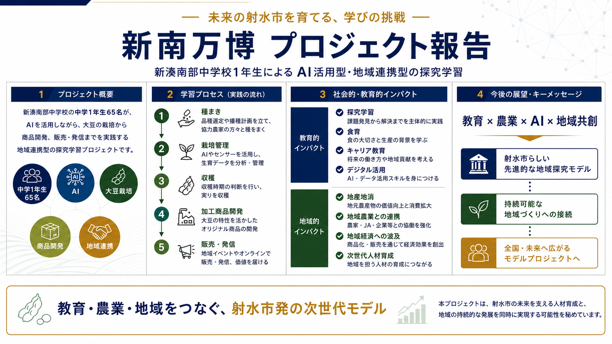
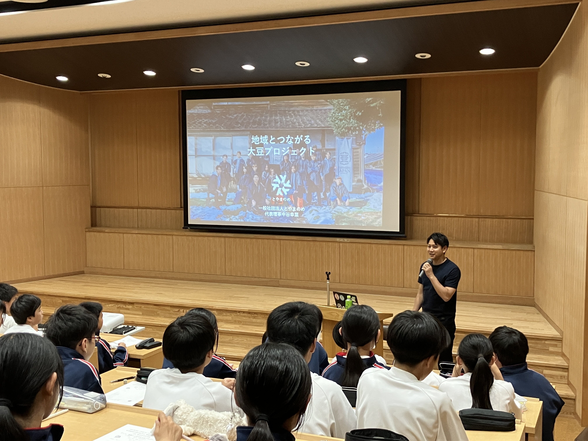
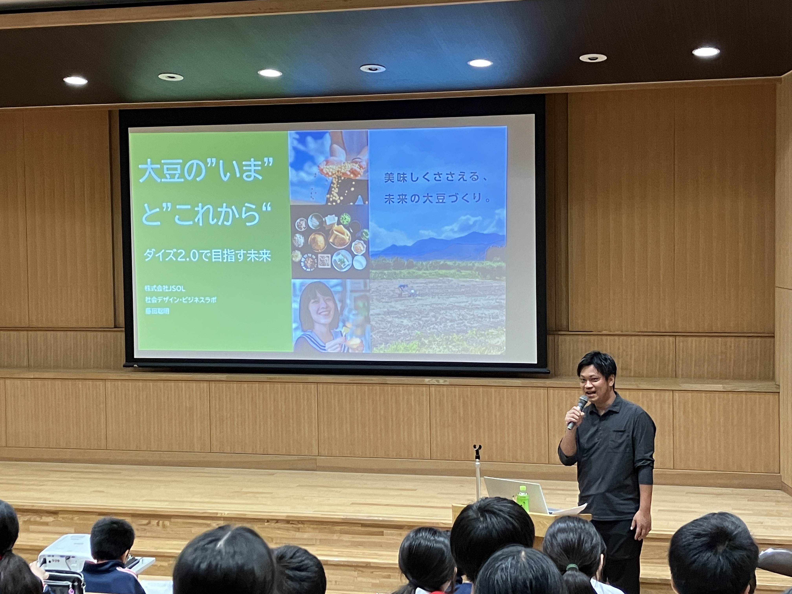
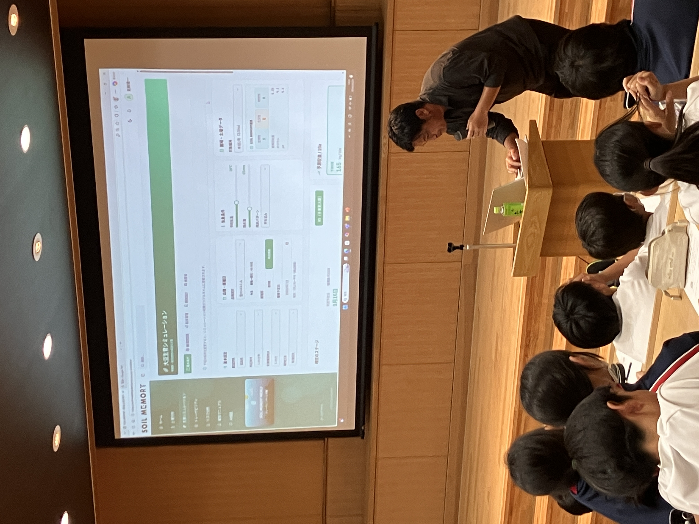
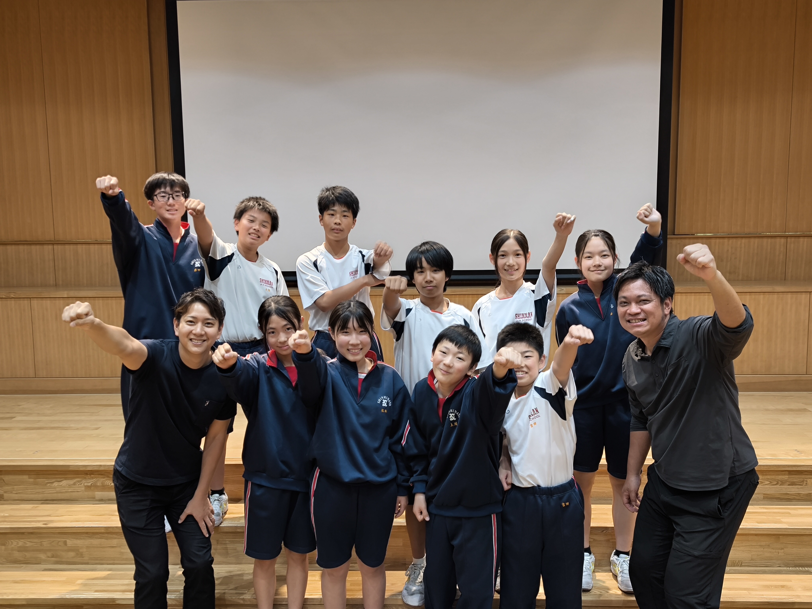
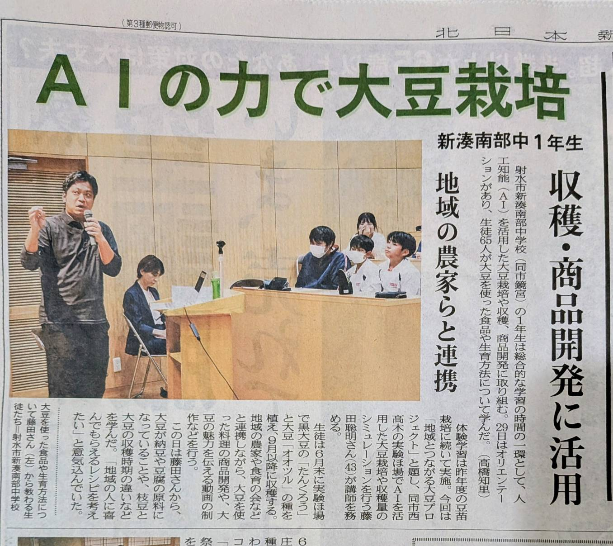
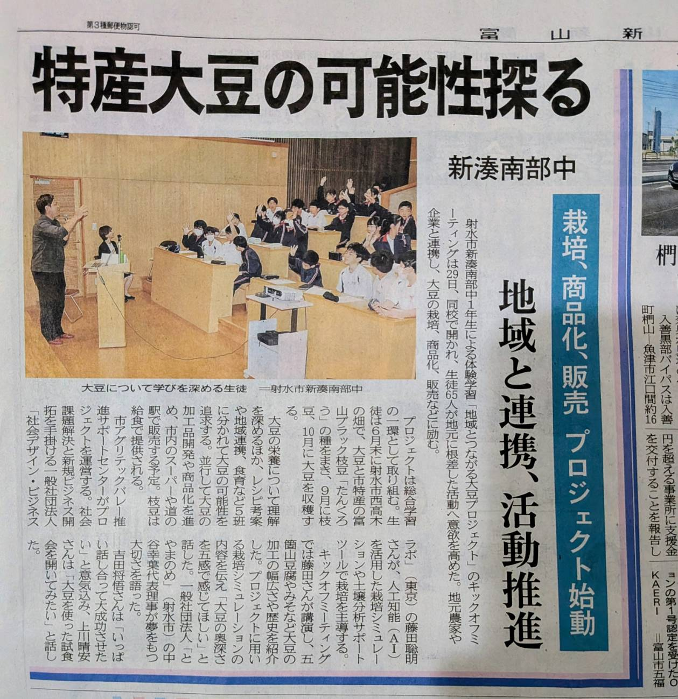

Project Report
添付資料ベースの令和8年度プロジェクト像
添付資料では、令和8年度の取り組みが「プロジェクト概要」「学習プロセス」 「社会的・教育的インパクト」「今後の展望・キーメッセージ」の4本柱で整理されています。 このページもその考え方に合わせて構成しています。
Reiwa 8 / 2026
新湊南部中学校1年生65名が、地域農家や支援機関と連携し、 大豆の栽培から収穫、商品開発、販売までを一気通貫で学ぶ探究学習。 AIアグリテックを取り入れながら、地域の農業課題を自分たちの手で体験し、 射水市らしい次世代型の地域探究モデルを形にしていく年度です。

Project Report
添付資料では、令和8年度の取り組みが「プロジェクト概要」「学習プロセス」 「社会的・教育的インパクト」「今後の展望・キーメッセージ」の4本柱で整理されています。 このページもその考え方に合わせて構成しています。
Kickoff Report
令和8年度のスタートとして、新湊南部中学校でキックオフミーティングを実施しました。 生徒65名が、大豆プロジェクトの全体像、地域とのつながり、AIを活用した栽培シミュレーション、 そして商品開発や販売まで見据えた学びの流れを共有した最初の時間です。

プロジェクトの起点として、地域と学びをどう結ぶのかが語られました。

大豆の今とこれからを考えながら、商品や食の未来まで視野を広げる講話が行われました。

生育条件や土壌データをもとに、栽培を支えるデジタル活用のイメージが共有されました。

これから始まる挑戦に向けて、生徒と伴走メンバーが一体感を持ってスタートを切りました。
News Coverage

「特産大豆の可能性探る」として、栽培・商品化・販売へつながるプロジェクト始動が紹介されました。

AI活用、収穫、商品開発、地域連携まで見据えた学びとして、キックオフの内容が報じられました。
Story
この年度は、単なる農作業体験ではなく、AIを活用した収量予測や地域消費、 商品開発まで含めた長い学びの流れが設計されています。 教室と圃場、地域の売り場がひとつの学びの場として接続されていることが特徴です。
品種選定や播種計画を立て、協力農家とともに種をまく。
AIやセンサーを活用し、生育データを見ながら管理する。
収穫時期を判断し、実際に大豆や枝豆を収穫する。
大豆の特性を生かし、地域に届けるオリジナル商品を考える。
地域イベントやオンラインも視野に、価値を伝えながら販売・発信する。
Impact

AI活用、収穫、商品開発、地域農家との連携が見える報道資料として掲載しています。

キックオフや地域連携の広がりを伝える資料として、活動の社会的な見え方を補強します。
Documents